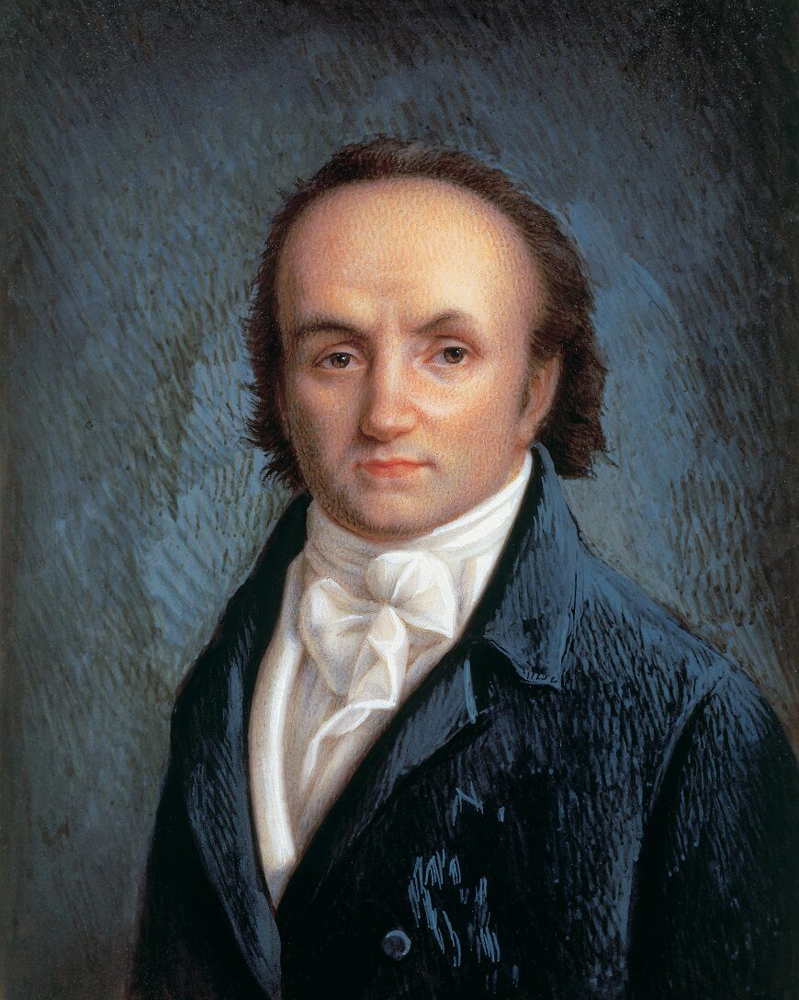
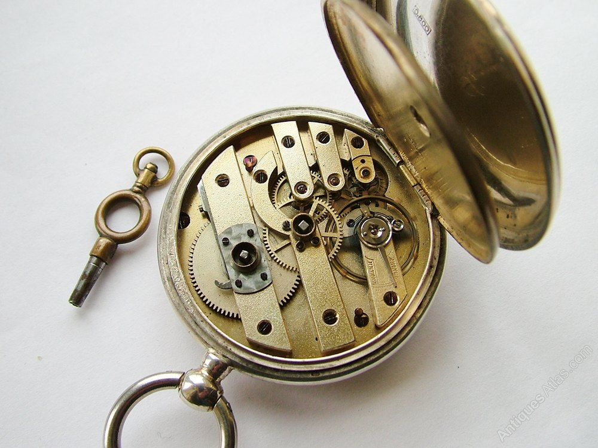
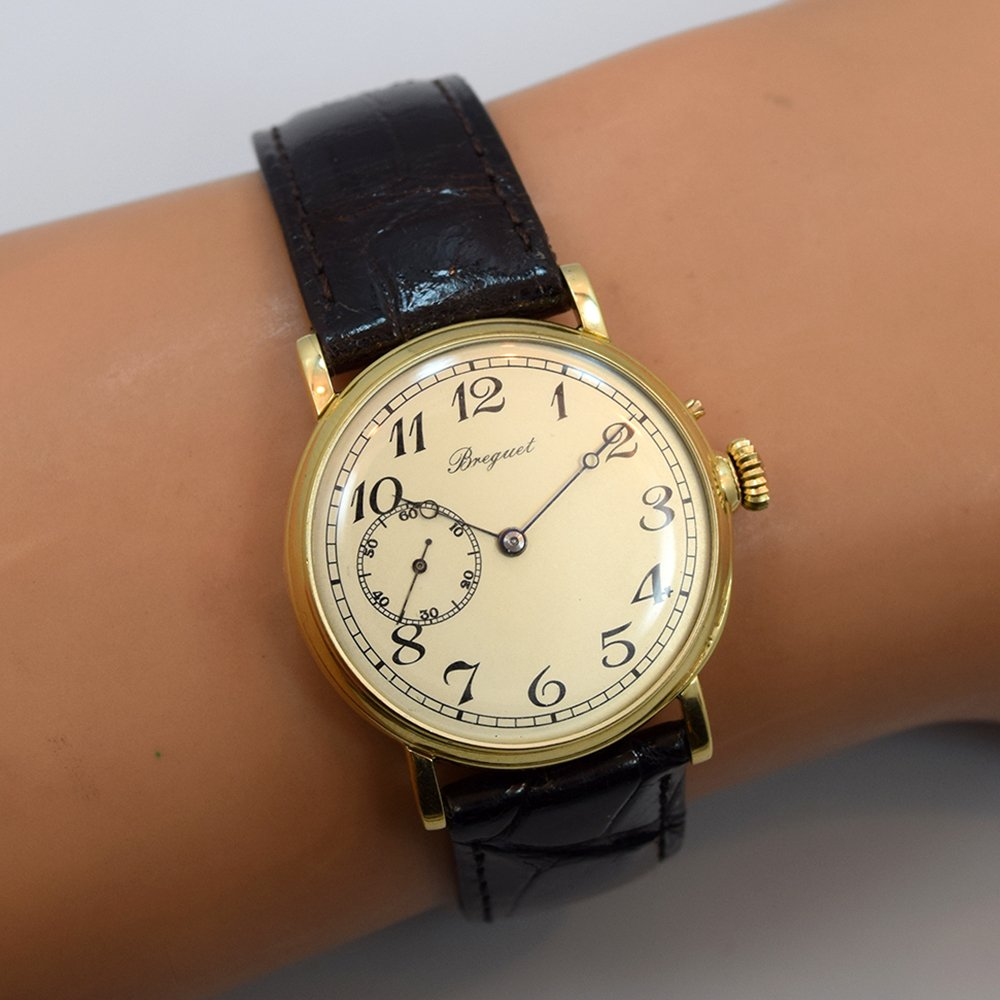
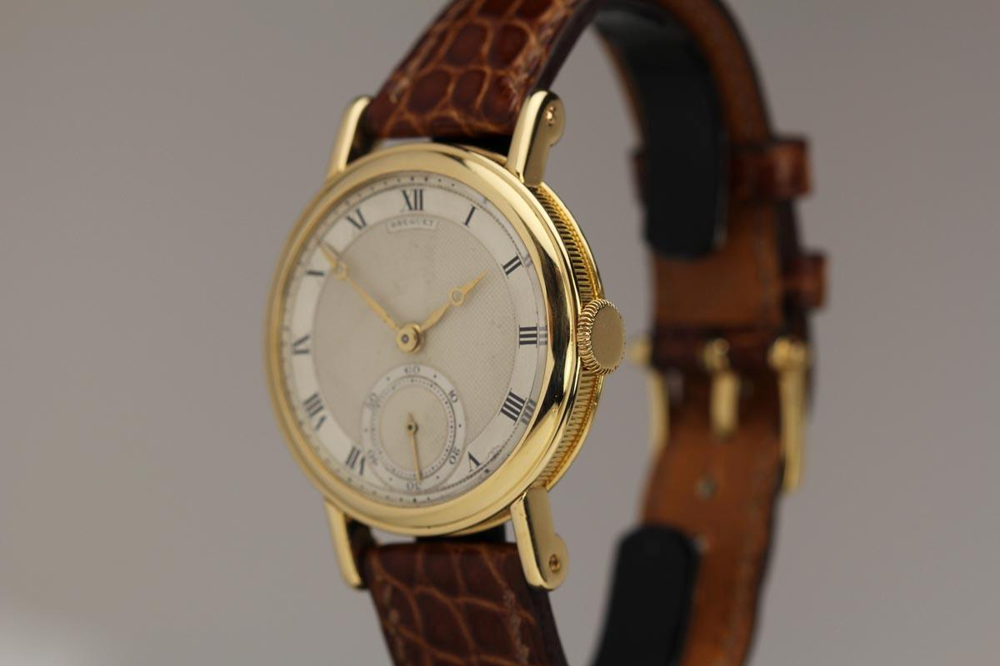

One of the most important watchmakers of the history

Breguet painting



Breguet achivements in watchmaking year by year:
1775–1780: Improved the automatic winding mechanism – his perpetual watch.
1783: Invented the gong for repeater watches (bells were used until then).
1783: Designed the apple-shaped (aiguilles à pomme) hands, known as 'Breguet' hands. These hollow,
eccentric "moon" tip hands are a variant of the hands first used by Jean-Antoine Lépine, the only difference
is that
Lépine's hands were not eccentric. Since their invention, Breguet hands have graced watch and clock dials
alike
until today.
1787: Adopted and improved the lever escapement. Abraham-Louis Breguet used it in its definitive
form
from
1814 (this form is still in use).
1790: Invented the 'pare-chute' anti-shock device.
1793: Developed a small watch showing the equation of time.
1794: Invented a retrograde display mechanism.
1795: Invented the Breguet spiral (flat spiral balance spring with overcoil).
1795: Invented the "Sympathique" ('sympathetic') clock, a master carriage clock which rewinds and
sets to
time a detachable pocket watch.
1799 Invented the montre a tact ("tact") watch that could be read by feel in the pocket or the
dark.
1801: Patented the tourbillon escapement, developed circa 1795.
1802: Invented the echappement naturel, a double-escape wheeled chronometer escapement that needed
no
oil.
1821: Developed the "inking" chronograph, in partnership with Frédérick Louis Fatton.
You can read more about Breguet achivements on his Wikipedia Page.
And may also find more pictures and information of his creations on this Hodinkee article.